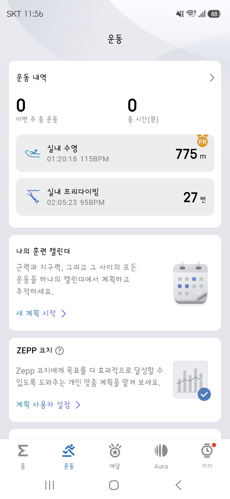
Zepp 앱의 운동 탭에서 다이빙 기록을 찾아요
워치가 Zepp 앱과 동기화되면 운동 탭에 최근 기록이 카드로 쌓여요. 프리다이빙 로그를 웹앱에 올리려면 여기서 시작합니다.
- 실내 프리다이빙 카드에 다이빙 시간·평균 심박수·횟수가 요약돼 보여요. (예: 02:05:23 · 95BPM · 27번)
- 여러 날짜의 기록을 한 번에 보려면 상단 운동 내역 ›를 눌러 전체 목록으로 들어가세요.
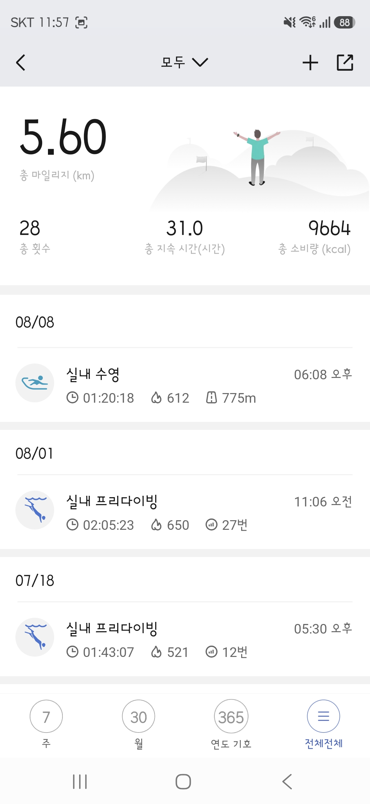
운동 내역 목록에서 내보낼 날짜를 골라요
날짜별로 실내 프리다이빙 기록이 나열됩니다. 웹앱에 올릴 그 날짜의 기록을 탭하세요.
- 각 항목에 운동 시간·소모 칼로리·다이빙 횟수가 함께 표시돼요.
- 날짜가 여러 개면 필요한 만큼 이 과정을 반복하면 됩니다 — 웹앱은 .fit 파일 여러 개를 순서대로 업로드할 수 있어요.
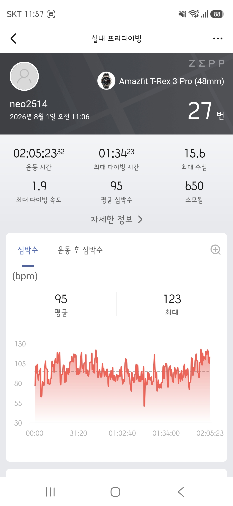
상세 화면 우측 상단 ⋯ 버튼을 누르세요
선택한 다이빙의 요약 통계와 심박수 그래프가 보이는 화면이에요. 여기서 .fit 파일 내보내기로 이어집니다.
- 최대 수심 · 최대 다이빙 시간 · 평균 심박수 등을 먼저 확인할 수 있어요.
- 우측 상단 ⋯(더보기) 아이콘을 탭하면 동작 메뉴가 열립니다.
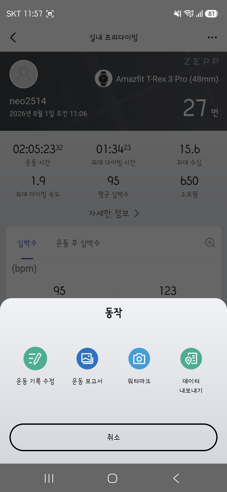
동작 메뉴에서 데이터 내보내기를 탭하세요
운동 기록 수정 · 운동 보고서 · 워터마크 · 데이터 내보내기 중에서 데이터 내보내기를 선택합니다.
- 다른 항목(운동 보고서, 워터마크)은 이미지 공유용이라 웹앱 업로드에는 필요 없어요.
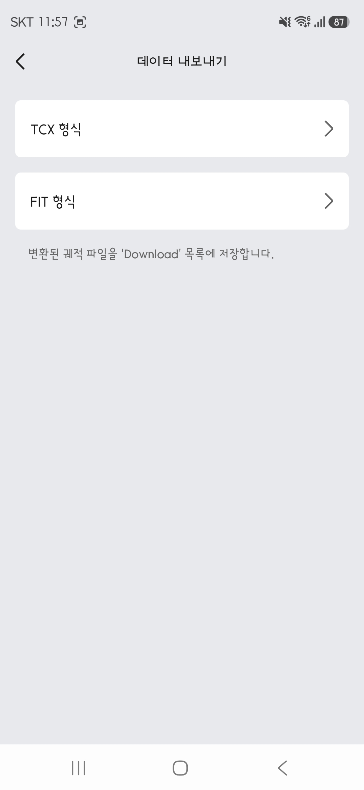
FIT 형식을 선택하면 끝이에요
TCX 형식과 FIT 형식 중 반드시 FIT 형식을 선택하세요. 변환된 파일은 휴대폰의 Download 폴더에 저장됩니다.
- 저장된 .fit 파일을 웹앱(STEP 06)의 업로드 화면으로 옮기면 바로 이어서 진행할 수 있어요.
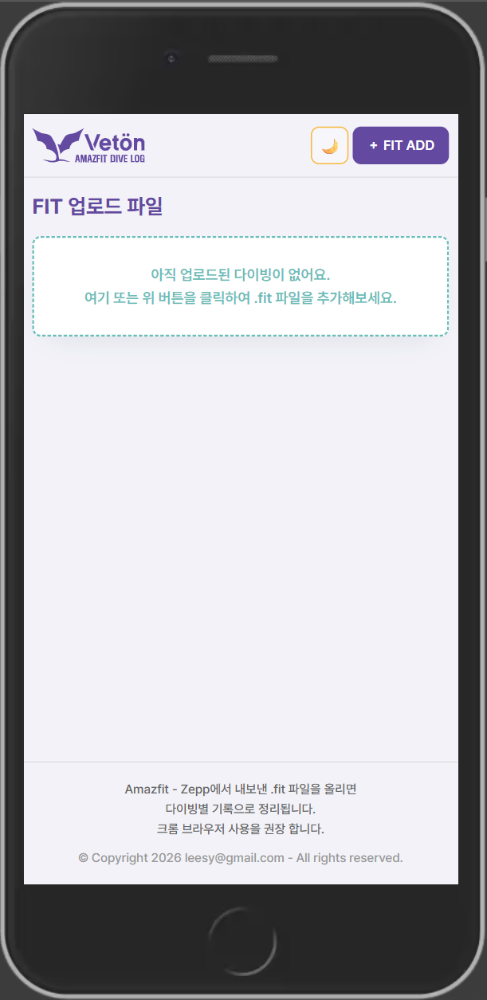
처음 접속하면 파일을 기다리는 빈 화면이 보여요
아직 업로드된 다이빙이 없다는 안내와 함께, 점선 박스 영역이 표시됩니다. 여기서 시작하면 됩니다.
- 우측 상단 + FIT ADD 버튼을 누르거나, 점선 박스를 클릭해 .fit 파일을 추가하세요.
- Amazfit 워치를 Zepp 앱과 동기화한 뒤, 다이빙 기록을 .fit 파일로 미리 내보내 두면 바로 업로드할 수 있어요.
- 우측 상단 🌙 아이콘은 다크 모드 전환 버튼입니다.
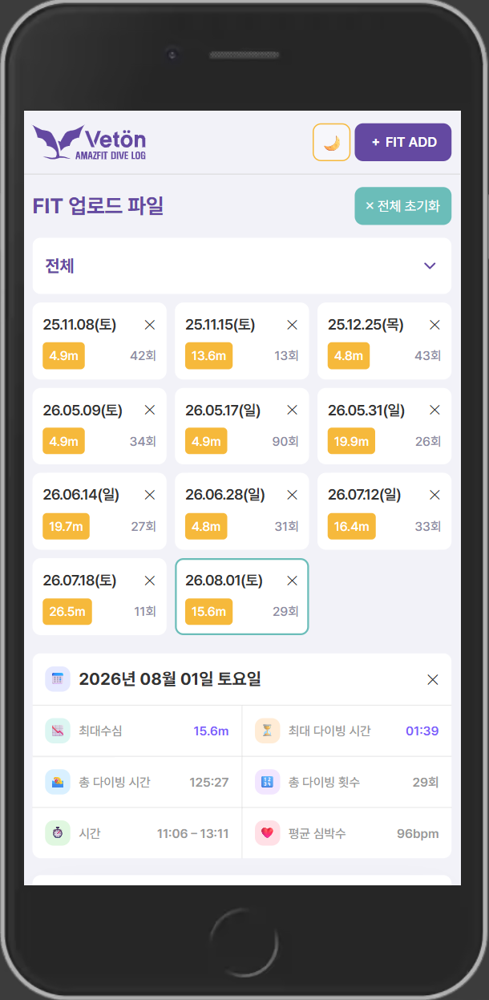
업로드 1건이 날짜 카드 하나가 됩니다
파일을 올리면 그 즉시 날짜별 카드가 생성돼요. 카드만 봐도 그날의 다이빙이 어땠는지 한눈에 파악할 수 있어요.
- 카드에는 날짜 · 최대수심 · 다이빙 횟수가 표시됩니다. (예: 26.08.01(토) · 15.6m · 29회)
- 카드 우측 상단 ✕로 해당 세션만 삭제, 상단 ✕ 전체 초기화로 전체 삭제가 가능해요.
- 카드를 클릭하면 하단에 그날의 요약이 펼쳐집니다 — 📉최대수심 · ⏳최대 다이빙 시간 · 🏊총 다이빙 시간 · 🔢총 횟수 · ❤️평균 심박수.
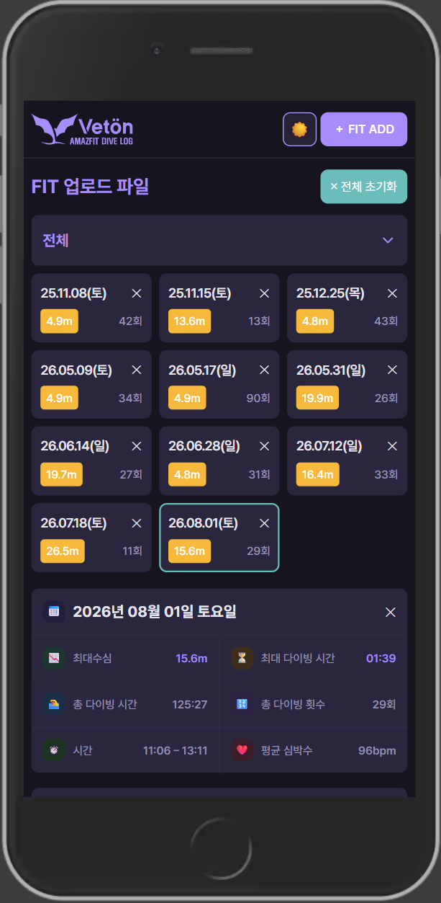
화면 밝기, 원하는 대로
같은 화면이지만 다크 모드에서는 눈이 편안하도록 톤이 전체적으로 낮아집니다. 야간에 기록을 확인할 때 특히 유용해요.
- 헤더의 🌙(또는 ☀️) 버튼 하나로 즉시 전환됩니다.
- 선택한 테마는 저장되어 다음 방문에도 그대로 유지됩니다.
- 시스템 설정을 따라가지 않고 사용자가 직접 켜고 끄는 방식이에요.
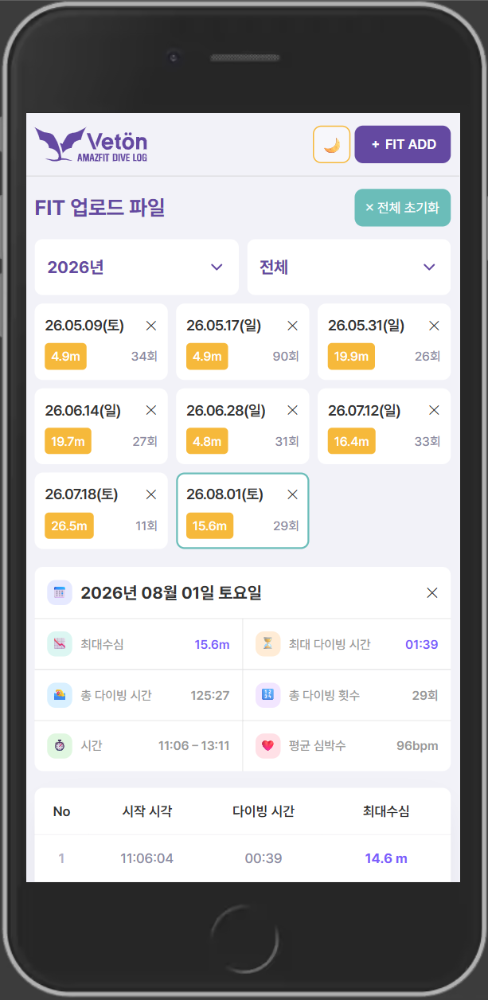
기록이 쌓일수록, 필터로 좁혀보세요
첫 번째 드롭다운에서 연도를 고르면 해당 연도의 세션만 남습니다. 세션을 클릭하면 다이빙별 표가 함께 열려요.
- 드롭다운에서 2026년처럼 연도를 선택 → 해당 연도 세션만 표시.
- 세션 클릭 시 요약 통계 아래로 다이빙별 표가 나타납니다.
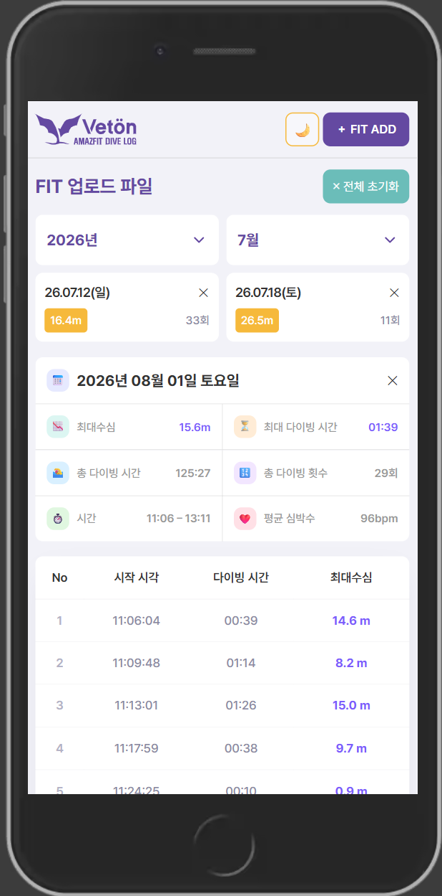
월까지 지정하면 더 빠르게 찾아요
두 번째 드롭다운에서 월까지 선택하면, 예를 들어 2026년 7월처럼 딱 그 달의 세션만 남습니다.
- 표는 스크롤하면서 그날의 모든 다이빙을 순서대로 확인할 수 있어요.
- 표의 각 행 = 그날 있었던 개별 다이빙 하나입니다.
- 다음 단계에서 행을 클릭하면 그 다이빙의 상세 차트가 열립니다.
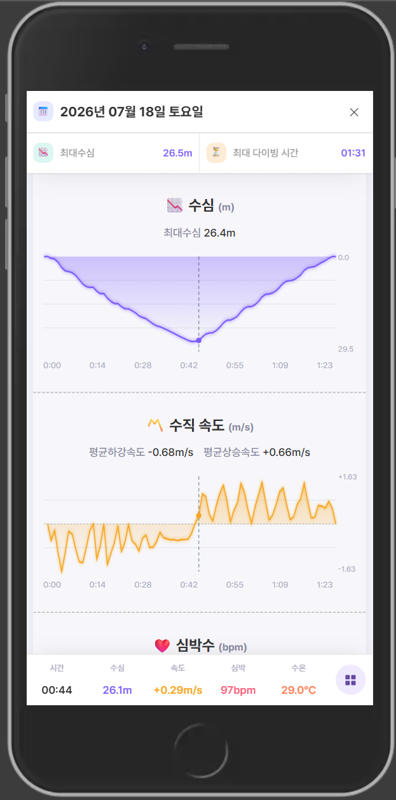
수심부터 심박까지, 위에서 아래로
다이빙 하나를 클릭하면 상세 차트 팝업이 열립니다. 기본은 차트가 세로로 나열되는 리스트형이에요.
- 수심(m) 차트: 시간에 따른 수심 변화(V자 그래프)
- 수직 속도(m/s) 차트: 하강/상승 속도 + 평균값
- 심박수(bpm) 차트: 아래로 스크롤하면 이어서 확인
- 차트를 드래그·터치하면 크로스헤어가 뜨고, 하단 고정 바에 그 시점의 시간·수심·속도·심박·수온이 표시돼요.
- 우측 하단 ⚏ 아이콘으로 박스형 전환
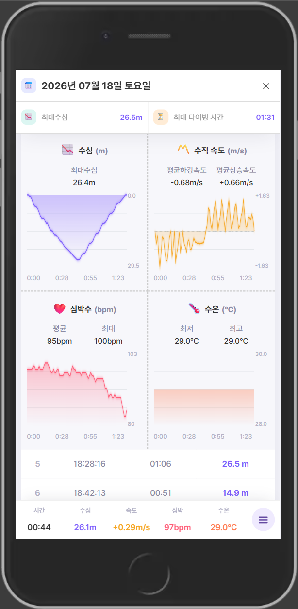
4개 차트를 한 화면에, 2×2로
수심 · 수직 속도 · 심박수 · 수온 차트를 격자로 모아 한눈에 비교할 수 있는 박스형 레이아웃입니다.
- 각 차트 아래 요약치: 수심(최대), 속도(평균 하강/상승), 심박(평균/최대), 수온(최저/최고)
- 차트 아래로 다이빙별 표가 이어지고, 크로스헤어 드래그도 동일하게 지원돼요.
- 우측 하단 ☰ 아이콘으로 다시 리스트형 전환
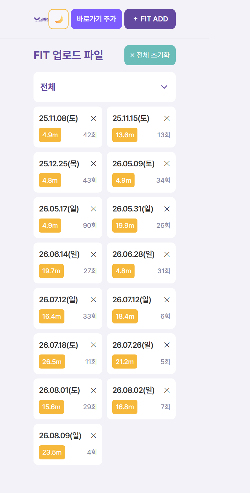
앱처럼 쓰고 싶다면, 홈 화면에 추가하세요
설치를 지원하는 브라우저에서 접속하면 헤더에 바로가기 추가 버튼이 나타납니다. 눌러서 설치하면 주소창 없는 앱 화면으로 바로 실행돼요.
- 설치 후에는 홈 화면 아이콘으로 바로 열리고, 실행 시 짧게 스플래시 화면이 보여요.
- 버튼이 안 보인다면 이미 설치돼 있거나, 브라우저가 설치를 지원하지 않는 경우예요 — 이런 경우엔 그냥 브라우저 탭으로 써도 기능은 동일합니다.
- 모바일 브라우저의 "홈 화면에 추가" 메뉴로도 같은 방식으로 설치할 수 있어요.